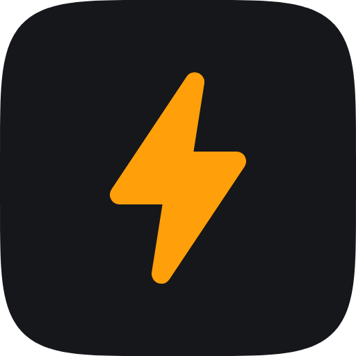
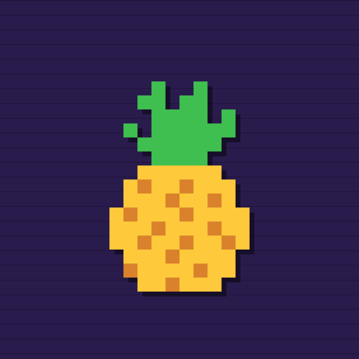
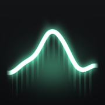
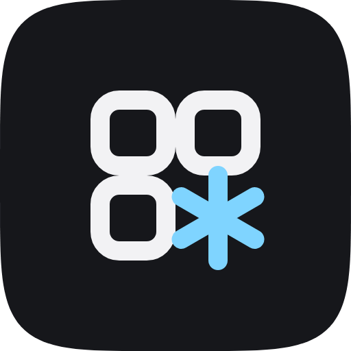

Triggr beta
Make any button, gesture or event do anything you want. Like Activator, rebuilt for iOS 15–18.
Buttons · screen edges · gestures · calls · music → apps, toggles, shortcuts and more

Jailbreak tweaks by Jond-ie, simple to use and tested on real iPhones.
Rootless (Dopamine) · iOS 15–18
Or add https://jond-ie.github.io/repo/ in your package manager.
Nothing matches. Try another word, or request it.

Make any button, gesture or event do anything you want. Like Activator, rebuilt for iOS 15–18.
Buttons · screen edges · gestures · calls · music → apps, toggles, shortcuts and more

A music player for your own songs that plays them exactly as good as the files are.
Lossless & hi-res · gapless · Automix · EQ for your headphones · synced lyrics

Icon themes on iOS 15–18, using the SnowBoard, Anemone and WinterBoard themes you already have.
No extra theme manager · works with most themes
Look at your phone and you’re on the Home Screen. No swipe up.
Stays on the Lock Screen when you have notifications or music, if you want
Springy, bouncy animations all over the Home Screen. The classic, back for rootless.
Full signal bars and any carrier name in your status bar, even with no SIM.
Stops Control Center tweak modules from disappearing on iOS 18. opa334’s CCSupport with our fix.
Tap Add to Sileo or Add to Zebra above.
Search its name, or open Pwnapple in your sources.
Tap Get. Settings, if it has any, are in the Settings app.